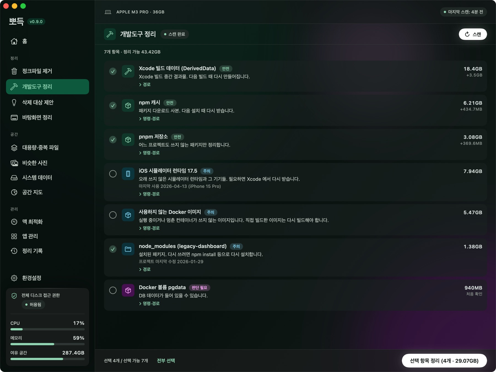
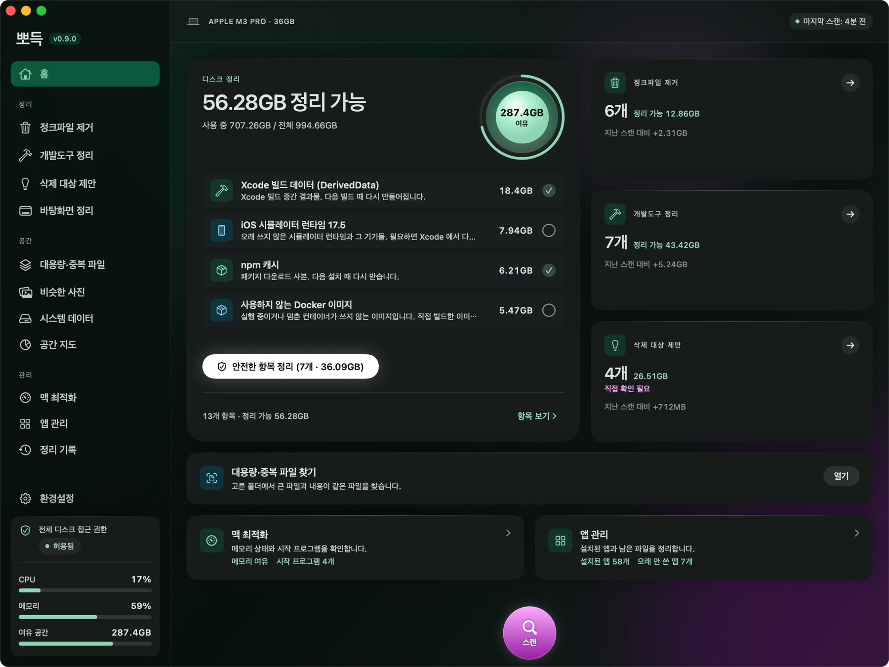
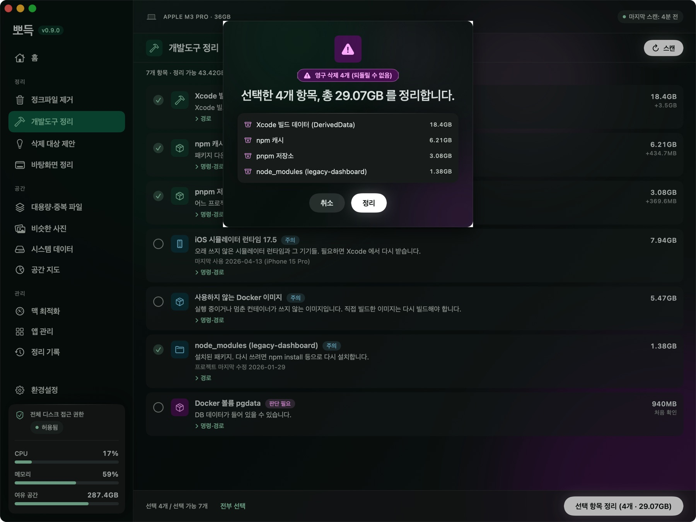
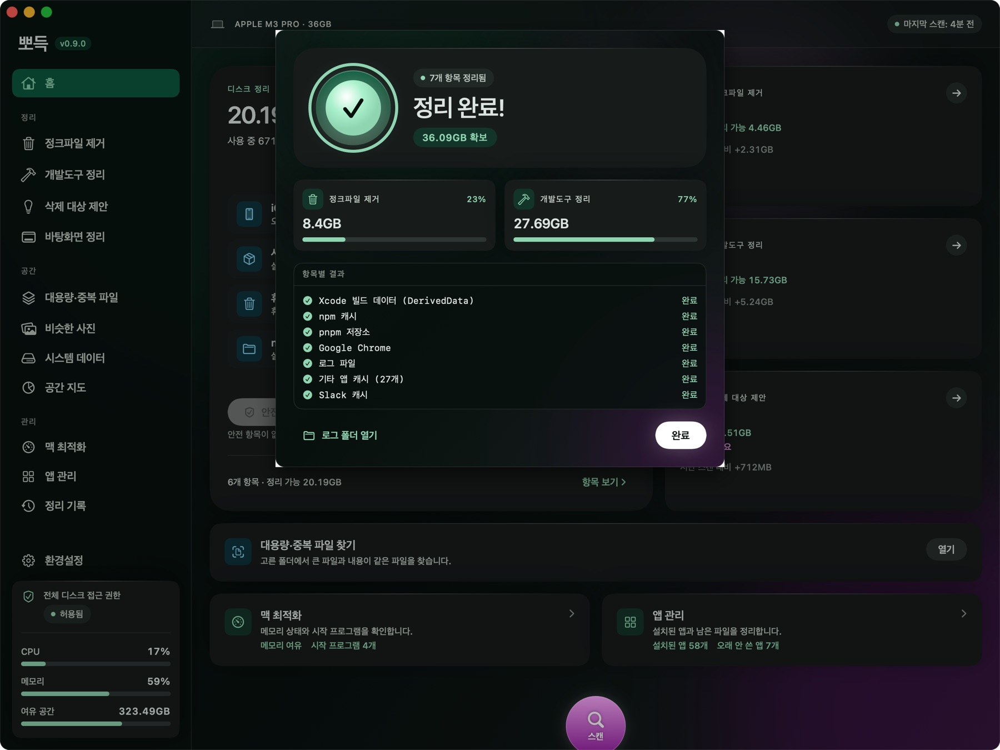
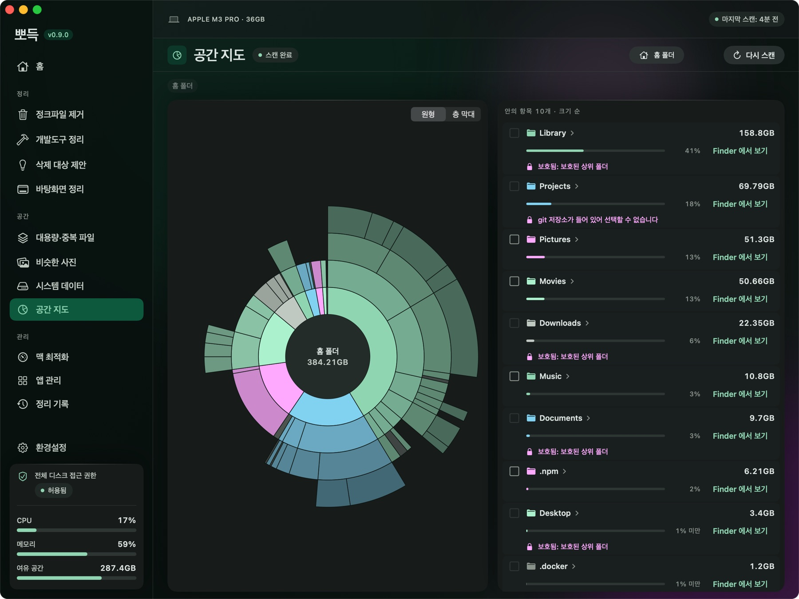
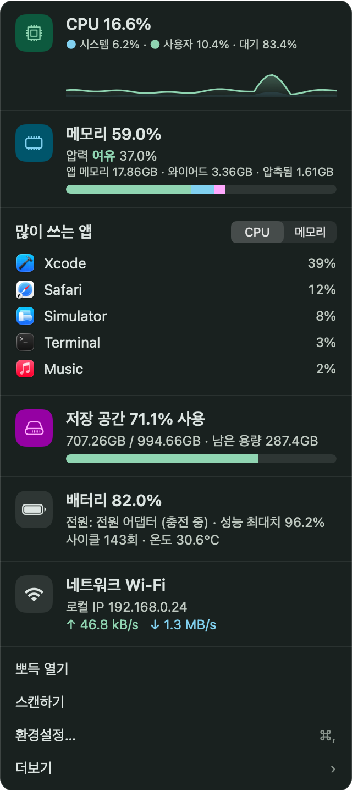

뽀득하게
맥 청소
뭘 지우는지 다 보여 주고 지워요. 용량이 모자라서 ~/Library 를 뒤져 본 적이 있다면, 그 일을 대신 해 주는 앱이에요. 캐시나 로그는 물론이고 Docker 이미지, Xcode 빌드 찌꺼기, 오래된 node_modules 처럼 개발하다 보면 쌓이는 것들까지 찾아 줘요. 로그인 정보나 쿠키, SSH 키 같은 건 건드리지 않아요.

세 번 누르면 끝나요
설정할 것도, 배울 것도 거의 없어요. 검사하고, 보고, 고르면 돼요.
검사하기
스캔 단추 하나면 캐시, 로그, 개발 도구, 큰 파일까지 한 번에 훑어요. 이때는 아무것도 지우지 않아요.
정크파일 4.2 GB · 개발도구 31.8 GB
보고 고르기
항목마다 위험도와 지워도 되는 이유가 붙어 있어요. 미리 체크된 건 안전 항목뿐이고, 나머지는 직접 골라요.
정리하고 기록 보기
정리 전에 무엇이 휴지통으로 가고 무엇이 바로 지워지는지 한 번 더 보여 줘요. 끝나면 기록이 남아요.
클리너 앱, 솔직히 좀 불안하죠
맥 커뮤니티에서는 "클리너 앱은 깔지 마라"는 말이 자주 나와요. 효과는 부풀리고, 너무 많이 지우고, 쓸데없이 늘 켜져 있으니까요. 그래서 뽀득은 이렇게 만들었어요.
애매하면 안 지워요
로그인 정보, 쿠키, 방문 기록, 각종 키는 목록에 아예 안 올라와요. 확신이 없는 건 휴지통으로 보내니까 마음이 바뀌면 꺼내면 되고요. 뭘 지웠는지는 기록으로 남아요.
개발하다 쌓인 것까지
Docker, Xcode, 시뮬레이터, Gradle, node_modules, nvm 으로 깔아 둔 옛 Node, 다 쓴 git worktree. 보통 클리너는 잘 모르는 것들인데, 용량은 이쪽이 훨씬 커요.
숫자로만 말해요
"최적화 점수"나 메모리 정리, 바이러스 검사 같은 건 없어요. 실제로 잰 크기와 실제로 비운 용량만 보여 줘요.
할 수 있는 것들
항목마다 안전 · 주의 · 판단 필요 중 하나가 붙고, 왜 지워도 되는지 한 줄 설명이 같이 나와요. 처음부터 체크돼 있는 건 지워도 다시 생기는 '안전' 항목뿐이에요.
정리
공간
관리
최근에 들어온 것
화면 둘러보기
검사부터 정리가 끝날 때까지, 실제 앱 화면이에요.




화면 속 숫자와 파일 이름은 예시예요.
메뉴 막대에서 먼저 알려 줘요
메뉴 막대 아이콘을 누르면 CPU, 메모리, 저장 공간과 지금 많이 쓰는 앱이 보여요. 정리할 게 생기면 알림을 보내는데, 지우는 건 항상 직접 눌렀을 때만 해요.
- 앱을 휴지통에 버리면 그 앱이 남긴 파일도 같이 치울지 물어봐요새 기능
- 바탕화면에 파일이 쌓이면 알려 줘요. 원하면 자리를 비운 사이에 알아서 정리하게 할 수도 있어요. 오늘 만진 파일은 그대로 둬요새 기능
- 다운로드 폴더에 오래된 설치 파일이 쌓이면 알려 줘요새 기능
- 저장 공간이 부족해져도 알려 줘요. 알림은 환경설정에서 하나씩 끌 수 있어요

이건 절대 안 지워요
어느 화면에서 골랐든 지우기 직전에 한 번 더 검사해요. 아래 목록에 걸리면 그냥 건너뛰어요.
손대지 않는 것
- 키 · 자격 증명: SSH · GPG 키, AWS · Google Cloud · GitHub CLI · npm · git 자격 증명, 키체인
- 브라우저 데이터: 쿠키, 로그인 정보, 방문 기록, 북마크
- 개인 데이터: 메일, 메시지, Safari, 사진 보관함
- 클라우드: iCloud Drive, 클라우드 저장소 폴더
- 앱 설정 · 데이터: 그 앱을 지울 때만 같이 휴지통으로 가요
- 회사 보안 · 관리 프로그램: 지우지도, 끄지도 않아요
지울 때 지키는 것
- 미리 체크되는 건 안전 항목뿐이에요. 캐시처럼 다시 생기는 거라 바로 지워요
- 대용량 · 중복 파일, 지운 앱이 남긴 파일은 휴지통으로 가요. 비우기 전에는 언제든 꺼낼 수 있어요
- Docker 볼륨처럼 되돌릴 수 없는 게 섞여 있으면 확인 창에 "영구 삭제 N개"로 따로 보여 줘요
- 지운 기록은
~/Library/Logs/Sweeper에 남아요 - 사용 통계나 개인 정보는 모으지 않아요
무료로 받아 보세요
한 번 깔고 나면 업데이트는 앱이 알아서 확인해요.
맥용 뽀득
- macOS 14 Sonoma 이상 · 한국어 · 영어
- Apple Silicon · Intel 모두 (하나의 앱)
- DMG 약 11 MB
- 아직 공증 전이라 처음 한 번 그래도 열기가 필요해요
- 최신 DMG를 받아서 열고, 뽀득을 응용 프로그램(Applications) 폴더로 끌어다 놓으세요.
- 뽀득을 처음 열면 "열 수 없습니다"라는 창이 떠요. 당황하지 말고 완료를 누르세요.
- 시스템 설정 → 개인정보 보호 및 보안으로 가서 맨 아래 그래도 열기 → 암호 입력 → 열기. 처음 한 번만 하면 돼요.
- 휴지통, 메일 첨부파일, 메신저 캐시, 아이폰 백업까지 보려면 같은 화면의 전체 디스크 접근 권한에서 뽀득을 켜 주세요.
알려진 제한 사항
아직 다듬는 중이라 미리 알려 드려요.
- 애플 공증 전이에요. 처음 열 때 macOS 가 한 번 막아요. 여는 방법은 위 설치 안내에 있어요.
- 휴지통 · 메일 첨부파일 · 메신저 캐시 · 아이폰 백업은 전체 디스크 접근 권한을 켜야 보여요.
- 비슷한 사진을 찾으려면 사진 보관함 접근 권한이 필요해요.
- 혼자 만들고 있어서 답이 조금 늦을 수 있어요. 문제나 제안은 GitHub 이슈로 남겨 주세요.
자주 묻는 질문
처음 열 때 경고 창이 떠요.
아직 애플 공증을 받지 않아서 나오는 안내예요. 시스템 설정 › 개인정보 보호 및 보안 맨 아래에서 "그래도 열기"를 누르면 열려요.
무료예요?
지금 버전은 무료예요.
맥이 빨라지나요?
빨라진다고 약속하지는 않아요. 뽀득이 하는 일은 저장 공간을 되찾는 거예요. 메모리 정리처럼 효과가 확실하지 않은 기능은 일부러 넣지 않았어요.
지운 파일을 되살릴 수 있나요?
휴지통으로 보낸 것(대용량 · 중복 파일, 지운 앱이 남긴 파일 등)은 휴지통을 비우기 전까지 꺼낼 수 있어요. 캐시 같은 안전 항목은 바로 지우지만, 필요하면 앱이 다시 만들어요. 되돌릴 수 없는 항목이 섞여 있으면 정리하기 전에 몇 개인지 따로 알려 줘요.
전체 디스크 접근 권한은 꼭 켜야 하나요?
아니요. 없어도 캐시나 개발 도구 정리는 돼요. 휴지통, 메일 첨부파일, 메신저 캐시, 아이폰 백업처럼 macOS 가 막아 둔 곳까지 보고 싶을 때 켜 주세요.
늘 켜져 있나요?
메뉴 막대에 떠 있으면서 알릴 게 있는지 확인해요. 메뉴 막대 아이콘, 알림, 로그인할 때 열기는 모두 환경설정에서 끌 수 있어요.
제 정보를 어딘가로 보내나요?
안 보내요. 인터넷에 접속하는 건 업데이트가 있는지 GitHub 에서 확인할 때뿐이에요.
회사 맥에서 써도 되나요?
회사 보안 프로그램이나 관리 프로그램은 지우거나 끄지 못하게 막아 뒀어요. 그래도 회사마다 규정이 다르니 한 번 확인해 보세요.